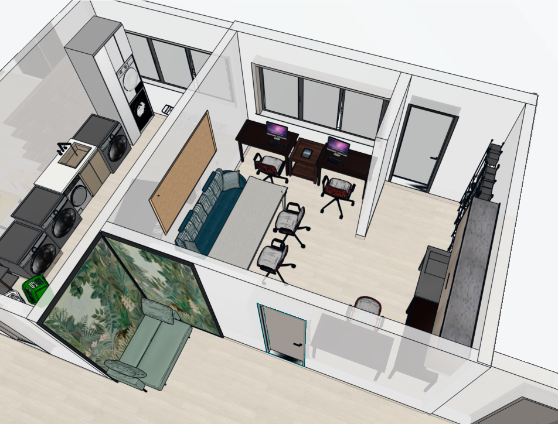

Tillgänglig och relationsbaserad teknik på grundläggande nivå, med fokus på motivation, inkludering och deltagande för personer med begränsad läs- och skrivförmåga.

Grupp 3 präglas av glädje, nyfikenhet och förväntan i vardagen. Tempot varierar mellan lugnt fokus och mer intensiv aktivitet beroende på dagsform och gruppens sammansättning.
Rummet rymmer både individuellt arbete och gemensamma aktiviteter. När uppgiften är tydlig och igenkännbar ökar koncentrationen och uthålligheten.
Gruppen upplevs trygg och fungerar bäst när personalen är samspelta och flexibla i stunden.